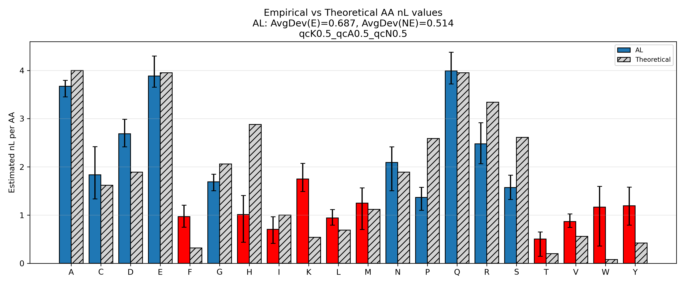

This module decomposes lipid-level n‑value measurements into component‑level contributions (fatty acids, headgroup, glycerol). It builds a design matrix from parsed lipid structures and uses Monte‑Carlo ridge regression to estimate per‑component nL, enabling comparisons across genotypes or conditions and optional overlay with literature values.
The script expects these columns (names are normalized on load):
Alignment ID (renamed internally to Sequence)Ontology (lipid class)metric (e.g., n_value, k, asyn)value (numeric)se (standard error; must be present and > 0)genotype (renamed to group_name)Rows with missing/≤0 se are dropped. Column renames and checks occur at start-up.
When launched, a small dialog gathers QC and display parameters:
k, Asyn, n (lower/upper). Lipid×group entries must fall within these per‑metric SE bounds to pass QC.0:0 token in modeling/plots).Ether* ontologies in parsing). FA = value” lines rendered as gray backdrop bars in component plots. Lipid rows are kept only if they can be parsed into components:
Ether* variants if enabled). 16:0, 18:1, pads to the expected count when needed (e.g., DG→3, lyso→2), and appends structural parts (Glycerol, Choline, etc.) per ontology. k_SE ∈ [k_low, k_high], Asyn_SE ∈ [A_low, A_high] (ignored if all Asyn SE=0),
and n_SE ∈ [n_low, n_high]. Non‑passing entries are excluded from modeling. n_value > 10 before modeling. 5% of lipids are dropped,
and any lipids containing them are removed from the current genotype’s system. (The 5% threshold is fixed in the code.)For each genotype:
A (lipids × components) from parsed components. N(median, SE) (truncated if configured), then solve
unconstrained ridge least‑squares for each draw (L2‑regularized). This implementation uses MC ridge (allows negative coefficients); it does not use non‑negative or bounded solvers.
All outputs are written to a timestamped folder next to your input, for example:
lipid_deconv_out_{basename}_{YYYYMMDD-HHMMSS}/.
Ontology, Sequence, n_value, n_val_se). Median, Lower, Upper per component; plus a combined summary table. To verify the correctness of the deconvolution logic (parsing → design matrix → Monte‑Carlo estimation), we replicated the workflow on peptides, where the true component stoichiometry (amino acids) is exactly known. Across the peptide benchmark, the method achieved an average deviation of ~0.5 per amino acid from ground‑truth composition—a strong check that the parsing, matrix assembly, and estimation steps recover known building blocks with high fidelity.

Because the lipid workflow reuses the same parsing, eligibility, design‑matrix construction, and Monte‑Carlo regression machinery documented above, the peptide results provide a practical, independent validation of this implementation end‑to‑end.
If Lipidomics_component_analysis\main.cmd exists in your working directory, a “Run nL Component Deconvolution” button will appear and execute it. On macOS/Linux, run the Python file directly.